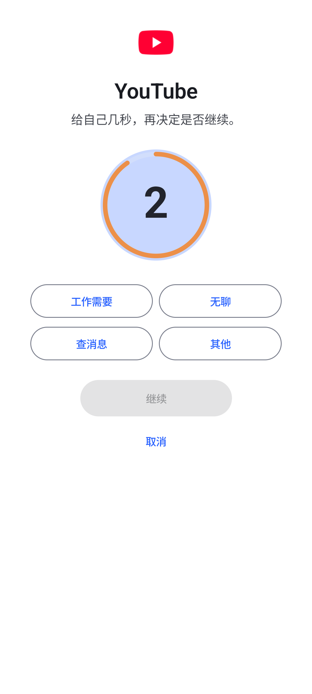
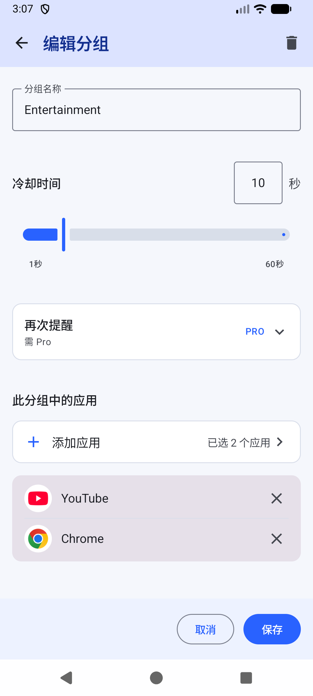
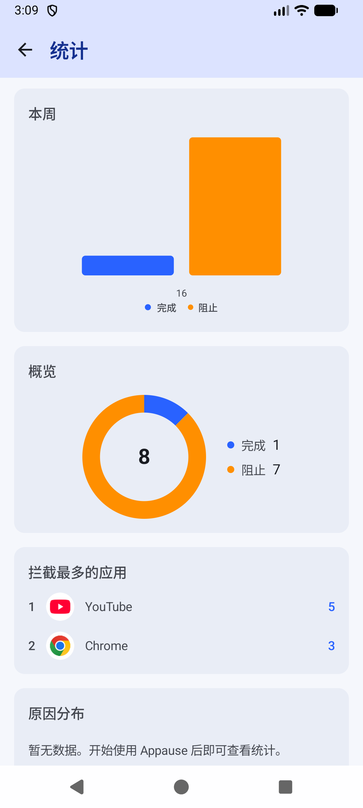

APPAUSE · ANDROID 专注工具
先等十秒，
再打开。
给最让你分心的那几个应用，加一道看得见的冷静期。点开之后先走一段倒计时， 想清楚了再进；不想进，一下就能回桌面。
数据只存本机日常使用不联网无广告无埋点MIT 开源

手机上总有那么两三个应用，你不想点开，手指却先到了。回过神来，二十分钟已经没了。
Appause 的做法很直接：在这些应用前面，加一段等得了的停顿。 倒计时走完，你当然可以继续，该用就用；但很多时候，倒计时还没走完， 你已经想起来了，其实也没那么想看。
它记录你自己定的规则，也记录你每次的选择。剩下的判断，交还给你。
一次拦截的经过
从点开应用到回到桌面，Appause 做了什么、你能做什么。
※ 时间与行为数据来自 v0.5.44 在小米 2410DPN6CC（HyperOS / Android 16）真机上的 ADB、logcat 与 WindowManager 记录；当前发布版 v0.5.45 的发布说明只涉及新手引导与 Pro 入口，未列出拦截改动。
-
T+0.00s
你点开一个被管理的应用
无障碍服务识别到前台应用的包名。它只读包名这一项信息，不读屏幕内容、消息或输入。
-
T+0.00s
暂停界面盖在最上层
暂停层使用系统无障碍窗口类型（TYPE_ACCESSIBILITY_OVERLAY），位于所有应用之上。 实测在开启「隐藏悬浮窗」防干扰机制的应用（如小红书）上，它仍然可见。
-
倒计时
等一段你自己定的冷却时间
倒计时结束前，「继续」按钮保持不可用。等待期间可以先选一个原因： 工作需要、无聊、查消息，或其他。
-
二选一
继续，或者回桌面
「继续」进入应用；「取消」直接回桌面，冷却重新计时。按 Home 键也会立即关闭暂停层。
-
T+0.29s
关掉再点回去？会再拦一次
真机记录：回到桌面后 291 毫秒内重新打开 B 站，Appause 再次拦截。 防手滑，也防「顺手再开一次」。
-
T+1.8s
最近任务键不会误判
按下最近任务键后约 1.8 秒，暂停层仍在（真机 logcat 记录），Appause 不会把 「看了眼后台」当成「回到了桌面」。只有真正回到主屏幕，这次暂停才算结束。
真机验证记录
代码开源，结论也摆在明面上。以下条目全部来自可复核的真机测试证据。
| 验证项 | 方法 | 结果 |
|---|---|---|
| Home 键关闭暂停层 | logcat（reason=homekey） | 通过，立即关闭 |
| 最近任务键不误判为回桌面 | WindowManager 状态记录 | 通过，约 1.8 秒后暂停层仍在 |
| 暂停层在防截屏应用上可见 | 小红书实机（setHideOverlayWindows） | 通过，无障碍窗口类型 2032 不受影响 |
| 回桌面后立即重开目标应用 | Home → B 站，间隔 291 ms | 通过，产生第二次拦截 |
以上是有限验证记录，覆盖面到不了所有机型与系统版本，不能当作全设备质检报告。 完整证据台账见 TEST_REPORT.md。
分组、冷却与记录
规则由你定，Appause 只负责执行，并且把每次执行都记下来。
- 应用分组：把目标应用放进同一组，共享一条冷却规则
- 冷却时间：免费版每组最长 60 秒，按需调整
- 使用统计：免费可查看 365 天记录，含每次继续或取消的原因
- 暗色模式：跟随系统
- OEM 保活指引：小米 HyperOS 等系统的电池与自启动设置说明


权限与隐私
每一项权限做什么用，写清楚；用不到的，一项都不加。
Appause 的分组、冷却和统计保存在本机数据库（Room / DataStore）里。 没有账号，没有广告，没有统计 SDK，也没有云同步。
| 权限 | 状态 | 用途 |
|---|---|---|
| 无障碍服务 | 必需 | 识别前台应用包名。canRetrieveWindowContent = false，不读取屏幕内容、消息、截图或键盘输入。 |
| 电池不受限制 | 建议开启 | 防止系统在后台杀掉检测服务。这是小米 HyperOS 等机型上「拦截失灵」的第一大原因。 |
| 使用情况访问 | 建议开启 | 在本机确认真正的前台应用，减少通知误触发。 |
| 显示悬浮窗 | 可选备用 | 仅当个别机型不显示无障碍暂停层时，作为兼容后备。 |
| 通知 | 可选 | Android 13+ 的常驻运行状态通知，与前台识别无关。 |
| 网络 | 仅你操作时 | 只在开启试用、兑换激活码或发送反馈时联网。日常拦截与统计完全不产生流量。 |
日常使用不联网。 Appause 在你打开应用、拦截、倒计时、记统计的整个过程中，不发出任何网络请求。 完整说明见 PRIVACY.md。
核心免费，Pro 可选
公开测试版没有订阅，也没有付费版本。Pro 是一组明确标注的实验功能。
免费版
- 全部拦截能力：分组、冷却、暂停界面、取消回桌面
- 使用统计：365 天记录
- 暗色模式与 OEM 保活指引
- 反馈通道：设置内附诊断快照，可选发送
Pro（实验功能）
- 无限分组：免费版 1 个分组
- 再次提醒：停留在目标应用时二次提醒
- 自定义暂停提示语
- 自定义打开原因
试用与激活的顺序：每台设备可自愿开启一次 7 天 Pro 试用；试用结束后，
在 设置 → 反馈 申请免费永久码，再到 Pro 页面兑换。没有支付环节，不会自动扣费。
完整的权限说明见 README。
下载 Appause v0.5.45
公开测试版 · 2026-09-24 发布 · 未上架应用商店
下载 Appause-v0.5.45.apk包名 com.appause.android versionCode 97 大小 12.3 MB 系统要求 Android 8.0+
查看 APK SHA-256 校验值
07cfbfaace902ea718f46abc1bcfd2011f42087e73ed3c60a34a62921bf30b6a
APK 需要允许「安装未知来源应用」。首次侧载前建议先读 安装指南· GitHub Release
常见问题
它会监控我吗？
无障碍服务只读取前台应用的包名一项信息，配置上关闭了窗口内容读取 （canRetrieveWindowContent = false），所以它读不了屏幕内容、消息、截图和键盘输入。 所有数据保存在你的手机里。
这是家长控制软件吗？
Appause 面向使用者本人，用来支持你自己定下的规则。它没有远程管理功能， 不会向任何人上报，也不适合用来监控别人的设备。
会耗电吗？为什么拦截有时会失灵？
无障碍服务有常驻开销，本机测试中影响有限。如果拦截失灵，先检查两件事： 把 Appause 的电池限制设为「无限制」，并允许自启动。小米 HyperOS 等系统 杀掉后台服务后不会自动重启无障碍，这是排障记录里最常见的原因。
暂停界面会被其他应用挡住吗？
暂停层使用无障碍窗口类型（2032），层级高于普通应用，实测在开启 「隐藏悬浮窗」机制的应用上仍然可见。个别机型如果不显示，可以开启悬浮窗权限， Appause 会自动尝试兼容后备方案。
Pro 收费吗？
不收费。核心功能永久免费，Pro 的四项实验功能也没有付费环节： 可以开一次 7 天试用；试用结束后在「设置 → 反馈」申请免费永久码，人工签发。
换手机后数据还在吗？
数据只存本机，卸载应用即全部清除。分组和统计没有云同步，换机后需要重新设置。